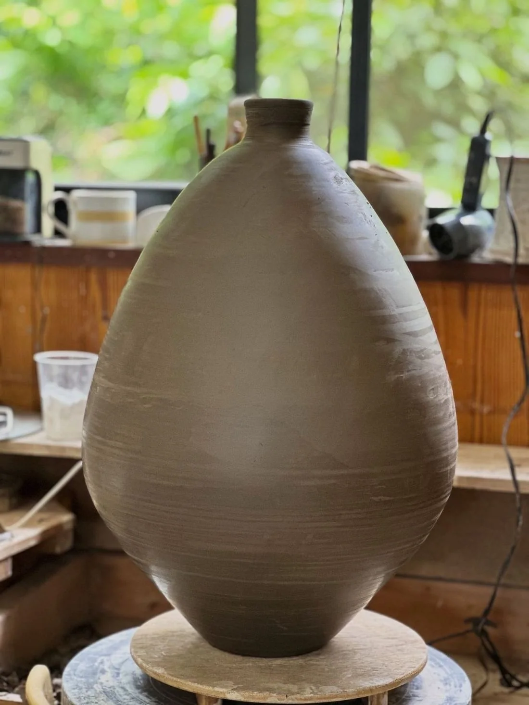

長野県・原村の葡萄と、滋賀県・信楽の土。ワインと陶器、二つの仕事が交わるところから、ENSOUの記録は始まる。
長野・原村のキフタトワインズ（KIFUTATO WINES）と、滋賀・信楽の嘉祥窯が取り組むワインと陶器の共同プロジェクト。原村で育てた葡萄からワインを造り、信楽の壺で熟成する。その先には、剪定枝の灰を釉薬に用いる陶器ボトルの構想がある。
原村の葡萄を醸す、日達桐子さん。
長野県原村で家族とともにワインづくりを続けるキフタトワインズ。2024年にワイナリーが完成し、日達桐子さんが醸造と運営を担う。両親が営む原山農園では2015年からワイン用葡萄の栽培に取り組み、桐子さんは国内外の醸造所で学んできた。
葡萄を育てる土地の仕事と、その個性をワインに変える人の仕事。信楽で壺をつくる森岡嘉祥さんの仕事とともに、ENSOUという一つの記録になっていく。
2026年7月、まずは信楽で壺を試作する。

嘉祥窯・森岡嘉祥が試作に取り組んだのは、ワイン熟成用の20Lの陶器の壺。原村の葡萄をどのような器で育てていくか、その最初の仕事が記録されている。

畑の一年を、器に残す。
構想しているのは、熟成を終えたワインを収める陶器ボトル。その釉薬に、原村の葡萄畑で生まれる剪定枝の灰を使えないか。畑と窯場をつなぐ試作が進められている。
このページは、ENSOUの経過を紹介する記録です。釉薬の仕様、ワインの仕上がり、発売時期などは検討中であり、完成・実現したことを示すものではありません。詳細な記録は元のプロジェクトページに掲載しています。
写真・記録：ASTER STYLE「ENSOU PROJECT ── 原村」（既存掲載資料）／本文：概要を再編集